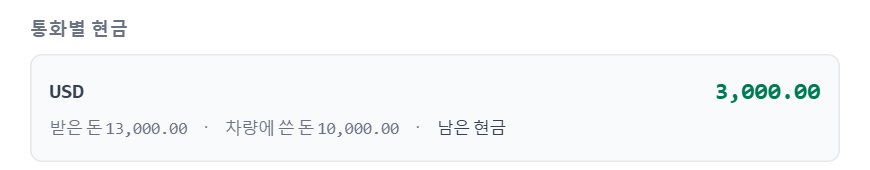
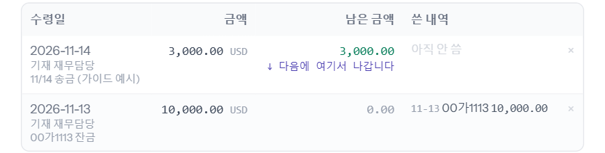
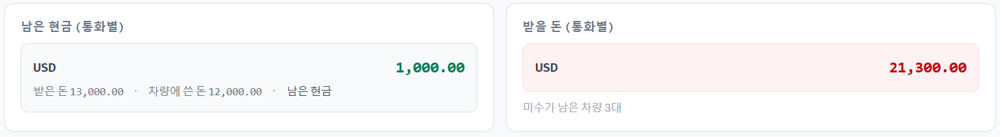
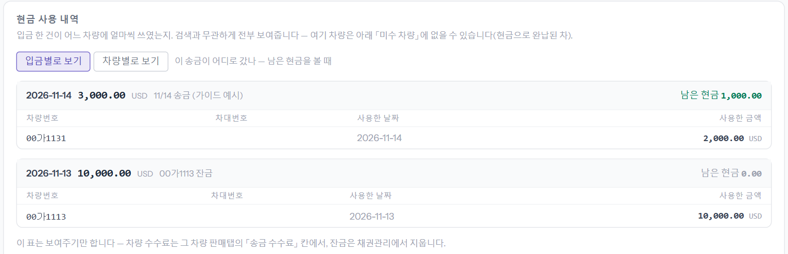
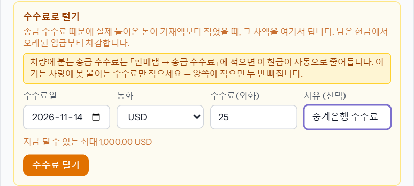
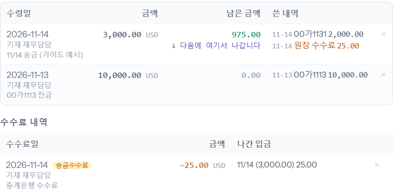

바이어가 보낸 돈(현금)을 먼저 바이어 앞으로 적어 두고, 차량별 판매 잔금을 확정할 때마다 그 현금에서 빠져나가게 하는 방식입니다(바이어 현금 원장). 「바이어 정산현황」에서 그 현금이 어느 차에 얼마 쓰였고, 아직 받을 돈이 얼마 남았는지 한 화면에 봅니다. 재무가 합니다.
회사마다 다릅니다 — 2026-11-14 운영 실측: heymanerp · karabaerp 는 사용, ssancarerp 는 미사용. 쓰지 않는 회사에는 바이어 「현금」 탭과 「바이어 정산현황」 메뉴가 아예 없고, 판매 잔금은 현금 기재 없이 바로 확정됩니다.
통장에 바이어 송금이 들어오면 수령일 · 통화 · 금액(외화) · 메모를 넣고 [입금 기재]를 누릅니다. 환율은 여기 적지 않습니다 — 차량별 판매 잔금에 적습니다.
「입금을 기재했습니다.」가 뜨고, 위 「통화별 현금」에 남은 현금이 늘어납니다. 아래 목록에는 입금 한 건마다 남은 금액과 쓴 내역이 보이고, 다음 잔금이 빠져나갈 입금에 「↓ 다음에 여기서 나갑니다」가 붙습니다(오래된 입금부터 씁니다).


그 송금으로 갚은 차의 잔금을 평소처럼 넣고(판매 탭, 또는 채권관리 「입금」 — 씬 「채권관리」), 「재무 처리」 → 「판매 잔금」에서 [재무 처리 완료]를 누릅니다. 확정되는 순간 그 금액만큼 바이어 현금에서 빠집니다. 예시는 00가1131 잔금 USD 2,000 → 남은 현금 3,000 → 1,000.
※ 남은 현금보다 큰 잔금은 확정되지 않습니다 — 「재무 확정 실패: 이 바이어(…)의 현금이 부족합니다. 필요 … / 남은 현금 … 바이어 탭 「현금」에서 입금을 먼저 기재하세요.」 송금이 들어왔는데 기재를 빼먹은 것이니 1단계부터 합니다.
왼쪽은 아직 차에 안 쓴 남은 현금, 오른쪽은 받을 돈(미수가 남은 차량 합)입니다. 둘 다 통화별로 따로 셉니다.

「현금 사용 내역」은 입금 한 건이 어느 차에 얼마씩 쓰였는지입니다. [차량별로 보기]를 누르면 반대로 차마다 어느 입금에서 왔는지가 보입니다. 한 잔금이 두 입금에 나뉘어 보이는 것은 오래된 입금부터 쓰기 때문이고, 두 번 낸 것이 아닙니다.

아래는 받을 돈을 컨테이너번호 · 수출신고번호 · B/L번호 · 선박명 묶음별로 모아 보고, 미수 차량을 남은 금액 순으로 봅니다. 위 [엑셀 내려받기]로 같은 내용을 엑셀로 받을 수 있습니다.
중계은행 수수료처럼 바이어가 보낸 금액보다 통장에 덜 들어왔는데 어느 차에도 붙일 수 없는 수수료는 여기서 텁니다. 남은 현금에서 오래된 입금부터 빠지고, 「지금 털 수 있는 최대」(남은 현금)를 넘으면 안 됩니다.

「수수료를 처리했습니다.」가 뜨고, 그 입금의 남은 금액이 줄며(1,000 → 975) 「쓴 내역」에 「원장 수수료 25.00」이, 아래 「수수료 내역」에 그 줄이 남습니다.

※ 수수료가 특정 차 한 대의 송금에 붙은 것이면 여기 말고 그 차 판매 탭의 「송금 수수료」 칸에 적습니다 — 그러면 이 현금도 저절로 줄어듭니다. 두 곳에 다 적으면 두 번 빠집니다.